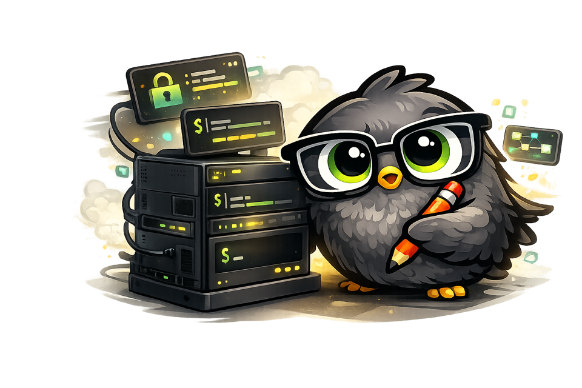

Stays in GitHub
Reviews appear as inline comments, a summary, and a status check where your team already works.
GitHub-first. Source-available. Self-hosted.
nitpickr reviews GitHub pull requests while keeping the code, the model, and the runtime decisions in your hands.

One clean review loop
nitpickr leaves inline comments for specifics, a summary for the big picture, and follow-up commands in the same pull request.
Pull request commands
@nitpickr review
@nitpickr why
@nitpickr statusProduct
Keep AI review in GitHub, keep the setup understandable, and keep the control where it belongs: with your team.
Reviews appear as inline comments, a summary, and a status check where your team already works.
Start on your laptop, keep it always-on with Railway, or move it onto your own VPS without changing how the product works.
Review behavior lives in the repository instead of a hidden hosted dashboard.
Why self-host
Start local, go hosted when you need uptime, or keep the whole runtime on infrastructure you already trust.

Model control
nitpickr is source-available under Elastic License 2.0. You can inspect the codebase, keep the review instructions next to the repository, and decide which model endpoint the reviewer should use.
OPENAI_MODEL defines the current review model.OPENAI_BASE_URL lets you point at a compatible endpoint.FAQ
The project should be described as source-available, not OSI-approved open source. The code is published under Elastic License 2.0, which allows personal and internal commercial use but restricts offering nitpickr itself as a hosted or managed service.
Because some teams want the runtime, logs, secrets, and model traffic under their own operational boundary. nitpickr keeps the architecture simple enough that a private VPS is a real option, not a marketing checkbox.
The deployment location, the GitHub App installation scope, the
repository instruction surface, the review strictness, and the
model endpoint through OPENAI_MODEL and
OPENAI_BASE_URL.
Today nitpickr is GitHub App only. It reviews pull requests,
publishes inline comments, writes a summary body, and updates a
nitpickr / review status check.
Start with the code
Start with the repository, test it on a real pull request, and move it onto infrastructure you control when it earns a place in your workflow.